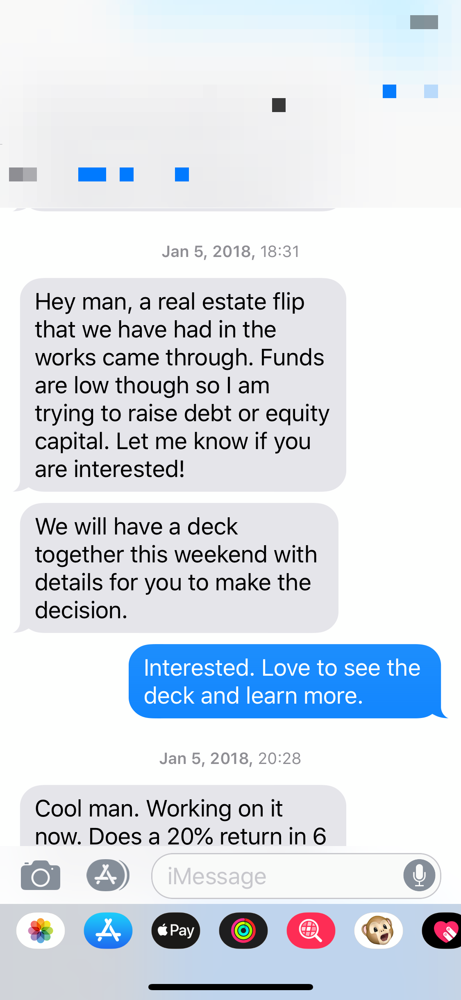
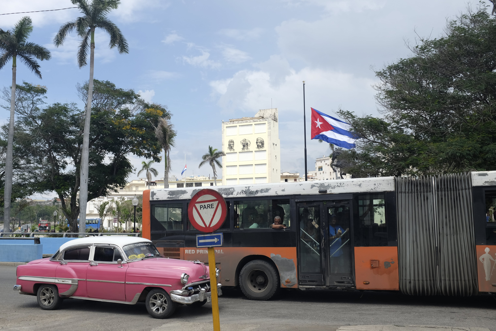
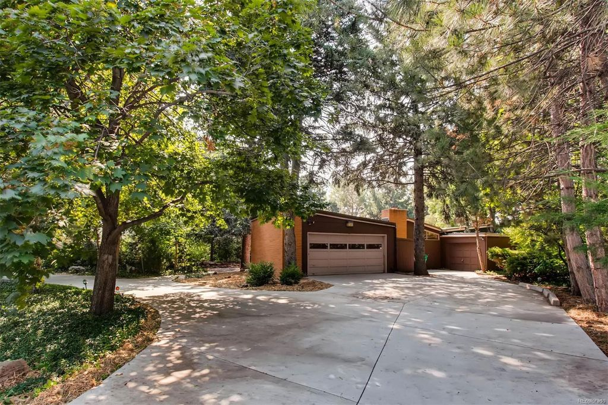

2018 in Review - A Year of Helping Others
In 2014, I wrote publicly about my goals. It was the first and last time I did such a thing in the open. But after five years and after recently reflecting on the importance of sharing my struggles and not letting shame win, I wanted to resume writing my goals here as a reminder to myself on what went well and what's next.
Overall, it was a year of some surprise turns and family chaos that turned into personal and financial opportunities.
Investing in a Fix and Flip

Tamara and I always imagined investing in and flipping a property, but we had no plans until a friend asked us to make a property investment in Chicago. After conversation and discussing with Tamara how much we were willing to lose financially, we made a deal and luckily everything worked out.
None of us knew much about the fix-and-flip process, but we learned together. Every week we would get an email update about the renovation progress and I would ask questions over text to learn a little bit more on how these things work. The email updates gave us an idea of the sequence of steps involved in doing a fix and flip, so if we ever want to do one ourselves we now have a reference point.
We set a savings goal for 2018, and we worried a real estate investment conducted by novices wouldn’t help us meet that goal. But not only did the work involved in the fix-and-flip make us feel more confident in remodeling a home, we also made about 40% return. We glad we could help and learn something along the way.
Becoming Landlords
We moved out of our first home last March because my mom, sister, and her two kids had moved in with us. It was great for about a month, but then the realities of living with my wife, daughter, mom, niece, and older sister sunk in and I needed an out that didn’t involve a bar and a bottle of beer. So, Tamara and I thought it was a perfect time to move out of our house to explore different neighborhoods so my mom and sister could have an affordable place to live.
We didn’t plan in 2018 to become landlords, but it was yet another thought we’ve had for some time and, even though it happened sooner than expected, we lucked out that our first tenants are family. We also got a chance to try out a neighborhood to get to know the education system and the people in the area before purchasing our next home.
Visiting Cuba

Another random thing that came up in 2018 was a couples trip to Cuba. Just like the real estate investment and moving out of our home, going to Cuba was never on our radar. Our friends had an interest in visiting Cuba before the U.S. does something silly, so we were like why not.
You can read more about tips I wrote shortly after the trip and checkout our Cuba attractions doc.
Helping Sister Transition
My younger sister left the military last December. We respect her decision and are happy that she served our country for four years, but like any person getting out of the military she needed support. So, Tam and I agreed to let her stay with us at our new crib.
Though her presence was another helping hand in our chaotic year, it became an opportunity to reconnect and spend precious time together.
Buying a Fixer Upper

To close out 2018, Tamara and I purchased a fixer upper just to make going into 2019 more interesting. We started out cruising neighborhoods trying to decide if we could see ourselves in different parts of Denver. The house we purchased was home to an older couple who passed within the past two years. Their kids became responsible for selling their parents’ estate. We were lucky to get the home beating out ten other offers. After we closed, we learned that the family that grown up there themselves wanted a growing family to live in the home, which gave us an edge over the highest bidders.
Goals for 2019
- Write 12 Blog posts. This is the year I commit to my personal blog with the goal of increasing my understanding on software/systems/life/startups, getting over my fears, reaching the right people, and standing out.
- Renovate new home. This one is a gimmy. We need a place to lay our head this year and to do that, we need our house to become a home.
- Launch a new software product. There’s so much you can learn just by launching a product and this year, I’d like to do this in a major way.
- Complete Activity Rings every single day. Apple Watches cost too much money not to use them for what they’re worth. And it's amazing for promoting a healthy lifestyle. So, this will be my measuring stick for how I’m doing with staying healthy.
- 5 3-day weekend trips to different parts of Colorado. Tamara and I have always wanted to spend more time in the mountainous parts of Colorado. Given we’re renovating our next home for better part of the year, we have an opportunity to roam Colorado.
- Get daughter reading at a first grade level. This is a stretch goal and I think it's attainable with consistent effort to read to her and practice writing.
- Start a meetup for tech black nerds. Colorado lacks a online resource for blacks in tech who are considering Colorado as a place to live. I’d like to create a group that does three high-level things: helps connect locals, offers learning opportunities, and helps black nerds grow professionally. This is already in the works.
- Become more effective with my time. Despite having small wins in 2018, I don’t feel like my output was nearly as high as it could be. One of my goals is to use my time better and create more in 2019.
Views expressed in “content” (including posts, podcasts, videos) linked on this website or posted in social media and other platforms (collectively, “content distribution outlets”) are my own.